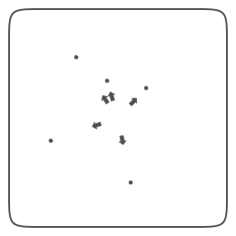
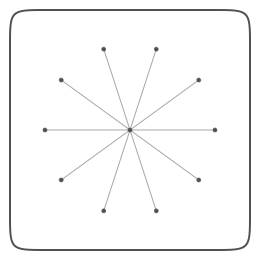
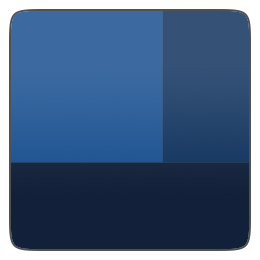
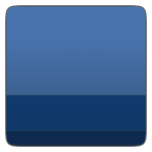

Math
More often than not programming scripts in NodeBox involves a little bit of mathematics. Things like fluid motion, orbitting behavior and easing in and out all require math formulas. Since most of us probably weren't paying any attention during math class, this document explains some useful math techniques.
Math geometry
Sometimes you have the location of two points and you want to know the angle between them. Or the distance. Or you have the coordinates of one point and want to know the location of the second point based on an angle and a distance. The following math commands might be of help. You can also find the basics about sines and cosines here.
The angle between two points:
def angle(x0, y0, x1, y1): from math import degrees, atan2 a = degrees( atan2(y1-y0, x1-x0) ) return a
The distance between two points:
def distance(x0, y0, x1, y1): from math import sqrt, pow return sqrt(pow(x1-x0, 2) + pow(y1-y0, 2))
The location of a point based on angle and distance:
def coordinates(x0, y0, distance, angle): from math import radians, sin, cos x1 = x0 + cos(radians(angle)) * distance y1 = y0 + sin(radians(angle)) * distance return x1, y1
The reflection of a point through an origin point:
def reflect(x0, y0, x1, y1, d=1.0, a=180): d *= distance(x0, y0, x1, y1) a += angle(x0, y0, x1, y1) x, y = coordinates(x0, y0, d, a) return x, y
To use these commands in your script, simply import them:
from nodebox.geo import angle, distance, coordinates, reflect
Some examples:
|  | The direction from the center of random points. x0, y0, r = WIDTH/2, HEIGHT/2, 2 for i in range(5): x1 = random(WIDTH) y1 = random(HEIGHT) oval(x1-r, y1-r, r*2, r*2) a = angle(x0, y0, x1, y1) transform(CORNER) translate(x0, y0) rotate(-a) arrow(30, 0, 10) reset() |
|  | Orbiting around(x0, y0). x0, y0, r = WIDTH/2, HEIGHT/2, 2 oval(x0-r, y0-r, r*2, r*2) for i in range(10): a = 36*i x1, y1 = coordinates(x0, y0, 85, a) oval(x1-r, y1-r, r*2, r*2) line(x0, y0, x1, y1) |
 | Perpendicular lines on a circle path: path = oval(100, 100, 105, 105) for t in range(50): pt = path.point(float(t) / 50) a = angle(pt.x, pt.y, pt.ctrl2.x, pt.ctrl2.y) transform(CORNER) push() translate(pt.x, pt.y) rotate(-a+90) line(0, 0, 35, 0) pop() |
Math sequences
Sometimes you want to give a position and/or size to objects in such a way that they interrelate to each other, that there is some kind of ordering or harmony between them. Sine waves for example are great to describe motion because they ease in and out. Another interesting proportional principle is the golden ratio, the 3-5-8 rule. It has been around in aesthetics for a long long time. The great thing about it is that it can be expressed as a mathematical series (Fibonacci sequence).
def fib(n): if n == 0: return 0 if n == 1: return 1 if n >= 2: return fib(n-1) + fib(n-2) def goldenratio(n, f=4): # Returns two proportional numbers whose sum is n. f = max(1, min(f, 10)) n /= float(fib(f+2)) return n*fib(f+1), n*fib(f)
Colored rectangles proportioned with the golden ratio:
|  | w1, w2 = goldenratio(260) h1, h2 = goldenratio(260) b1, b2 = goldenratio(1.0) b3, b4 = goldenratio(b1) fill(0, b1/2, b1) rect(0, 0, w1, h1) fill(0, b2/2, b2) rect(w1, 0, w2, h1) fill(0, b4/2, b4) rect(0, h1, w1+w2, h2) |
|  | x, y = 0, 0 w, h = 260, 260 th = h # top height bh = 0 # bottom height for i in range(10): th, bh = goldenratio(th) v = float(th)/w + 0.3 fill(0, v/2, v) rect(x, y, w, th) y += th th = bh |